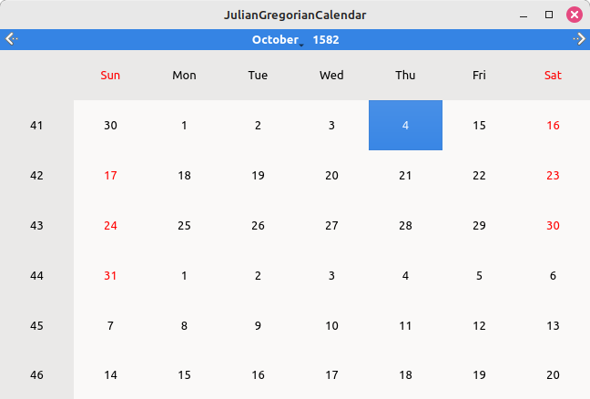

Calendar Backend Plugin Example
QCalendar example illustrating user-supplied custom calendars.

Introduction
There are numerous different calendar systems in use around the globe. Qt has built-in support for some of them (see System), but can't provide general support due to their high number. Additional calendar systems can be provided by implementing a custom QCalendarBackend, which is a private API.
This example demonstrates how to write a custom calendar backend and how to use the low-level plugin API to extend an application to user-selectable calendars. Many countries transitioned from the Julian to the Gregorian calendar at some point in their history, and this custom calendar backend will implement the respective calendar as an example. The custom backend is compiled into a plugin and loaded at runtime by the main application. The exact transition date, different for various regions, is provided as a string to the plugin and can be determined by the user.
Calendar backend
The calendar backend class must inherit from QCalendarBackend and implement its pure virtual functions in a thread-safe way. It may also override some other virtual functions as needed.
Example implementation
This example inherits from the already existing QRomanCalendar, which in turn inherits from the QCalendarBackend and implements some of its virtual functions. It's constructive to do this because the transition calendar shares, with both Julian and Gregorian calendars, parts provided by the Roman calendar.
Here is the class declaration of JulianGregorianCalendar:
class JulianGregorianCalendar : public QRomanCalendar { public: JulianGregorianCalendar(QDate endJulian, QAnyStringView name); QString name() const override; int daysInMonth(int month, int year = QCalendar::Unspecified) const override; bool isLeapYear(int year) const override; bool dateToJulianDay(int year, int month, int day, qint64 *jd) const override; QCalendar::YearMonthDay julianDayToDate(qint64 jd) const override; private: static inline const QCalendar julian = QCalendar(QCalendar::System::Julian); static inline const QCalendar gregorian = QCalendar(QCalendar::System::Gregorian); QCalendar::YearMonthDay m_julianUntil; QCalendar::YearMonthDay m_gregorianSince; QString m_name; };
The QDate passed to the constructor - endJulian - is the date of the last day of the Julian calendar. The calendar will automatically calculate the shift for a given year, e.g in 1582, 10 days were omitted, but in 1700, 12 days had to be omitted. The calendar backend is registered under name and a calendar instance can be created using that name. The class only overrides functions where the two calendars it combines differ from the Roman base. It has instances of the Julian and Gregorian calendars to which these functions can delegate.
Julian Day conversions
dateToJulianDay(int year, int month, int day, qint64 *jd) computes the Julian day number corresponding to the specified year, month and day. Returns true and sets jd if there is such a date in this calendar; otherwise, returns false.
bool JulianGregorianCalendar::dateToJulianDay(int year, int month, int day, qint64 *jd) const { if (year == m_julianUntil.year && month == m_julianUntil.month) { if (m_julianUntil.day < day && day < m_gregorianSince.day) { // Requested date is in the gap skipped over by the transition. *jd = 0; return false; } } QDate givenDate = gregorian.dateFromParts(year, month, day); QDate julianUntil = julian.dateFromParts(m_julianUntil); if (givenDate > julianUntil) { *jd = givenDate.toJulianDay(); return true; } *jd = julian.dateFromParts(year, month, day).toJulianDay(); return true; }
julianDayToDate(qint64 jd) computes year, month and day in this calendar for the given Julian day number, jd. If the given day falls outside this calendar's scope, the return value for isValid() is false. In this example, if the given date falls in the gap jumped over by the transition from Julian to Gregorian calendar, it is out of scope.
QCalendar::YearMonthDay JulianGregorianCalendar::julianDayToDate(qint64 jd) const { const qint64 jdForChange = julian.dateFromParts(m_julianUntil).toJulianDay(); if (jdForChange < jd) { QCalendar gregorian(QCalendar::System::Gregorian); QDate date = QDate::fromJulianDay(jd); return gregorian.partsFromDate(date); } else if (jd <= jdForChange) { QCalendar julian(QCalendar::System::Julian); QDate date = QDate::fromJulianDay(jd); return julian.partsFromDate(date); } return QCalendar::YearMonthDay(QCalendar::Unspecified, QCalendar::Unspecified, QCalendar::Unspecified); }
Locale support
A calendar may, in general, have its own naming of months of the year and days of the week. These must be suitably localized to be intelligible to all users. By default the backend baseclass takes care of week day names for us, which is entirely sufficient for these Julian/Gregorian transition calendars.
Although a backend can directly override the month naming methods, the baseclass version of these can be customized by implementing localeMonthData() and localeMonthIndexData() to provide tables of localized month names. Since the Julian and Gregorian calendars use the same month naming, they inherit that customization from a common base, QRomanCalendar. This also means the custom calendar can use the same names, again by inheriting from that base. This takes care of localization.
Plugin
Qt applications can be extended through plugins. This requires the application to detect and load plugins using QPluginLoader.
Writing a plugin
To write a plugin, the first thing that has to be done is to create a pure virtual class that defines the interface between plugin and application.
In this example the following interface was used:
class RequestedCalendarInterface { public: RequestedCalendarInterface() = default; virtual QCalendar::SystemId loadCalendar(QAnyStringView requested) = 0; virtual ~RequestedCalendarInterface() = default; };
and register it in the Qt meta-object system:
#define RequestedCalendarInterface_iid \ "org.qt-project.Qt.Examples.CalendarBackend.RequestedCalendarInterface/1.0" Q_DECLARE_INTERFACE(RequestedCalendarInterface, RequestedCalendarInterface_iid)
Q_DECLARE_INTERFACE() macro is used to associate the ClassName (here: RequestedCalendarInterface) with the defined Identifier (here: RequestedCalendarInterface_iid). The Identifier must be unique. This interface can be implemented by plugins that load other calendars, interpreting loadCalendar()'s string parameter in various ways. It isn't limited to this particular plugin that will be implemented using it, so it has a generic name, not one specific to this particular backend.
Then a plugin class that inherits from QObject and from the interface is created.
class JulianGregorianPlugin : public QObject, public RequestedCalendarInterface { Q_OBJECT Q_INTERFACES(RequestedCalendarInterface) Q_PLUGIN_METADATA(IID "org.qt-project.Qt.Examples." "CalendarBackend." "RequestedCalendarInterface/1.0") public: JulianGregorianPlugin(); QCalendar::SystemId loadCalendar(QAnyStringView request) override; ~JulianGregorianPlugin(); };
Q_PLUGIN_METADATA() and Q_INTERFACES() are being used to declare meta data that was also declared in the interface class and to tell Qt which interface the class implements.
This plugin instantiates and registers a custom calendar backend which can in turn be used to instantiate QCalendar by the application at any point.
Qt Plugins are stored in a single shared library (a DLL) and QPluginLoader is used for detecting and dynamically loading the plugin file (for more see How to Create Qt Plugins).
Loading the plugin
QPluginLoader checks if the plugin's version of Qt is the same as that of the application and provides direct access to a Qt plugin.
Here is the use of QPluginLoader in the example:
QPluginLoader loader;
loader.setFileName("../plugin/calendarPlugin");
loader.load();
if (!loader.isLoaded())
return 1;
auto *myplugin = qobject_cast<RequestedCalendarInterface*>(loader.instance());
First, an instance of a QPluginLoader object needs to be initialized. Next, it has to be specified which plugin to load by passing a DLL file name to setFileName(). Then, by using load(), the plugin file is dynamically loaded. At the end, a call to qobject_cast() tests whether a plugin implements a given interface. qobject_cast() uses instance() to access the root component in the plugin. If the plugin has been loaded correctly, its functions should be available.
Instantiating the backend
In this example there is only one function in the plugin. loadCalendar() is responsible for registering the custom calendar backend in QCalendarRegistry with given date of the transition and names.
QCalendar::SystemId JulianGregorianPlugin::loadCalendar(QAnyStringView request) { Q_ASSERT(!request.isEmpty()); QStringList names = request.toString().split(u';'); if (names.size() < 1) return {}; QString dateString = names.takeFirst(); auto date = QDate::fromString(dateString, u"yyyy-MM-dd", QCalendar(QCalendar::System::Julian)); if (!date.isValid()) return {}; QString primary = names.isEmpty() ? QString::fromStdU16String(u"Julian until ") + dateString : names[0]; auto backend = new JulianGregorianCalendar(date, primary); names.emplaceFront(backend->name()); auto cid = backend->registerCustomBackend(names); return cid; } JulianGregorianPlugin::~JulianGregorianPlugin() { }
String argument for loadCalendar() is supplied by the user via command line arguments. Then, the date of transition from the Julian calendar to the Gregorian is extracted by splitting the given string. After validation, a custom backend object is created. The backend must be registered before it can be used in QCalendar, using the registerCustomBackend() method. Once a backend is registered, a QCalendar can be instantiated with the respective SystemId or name.
Here is the use of loadCalendar in the main:
const auto cid = myplugin->loadCalendar(args.at(0));
if (!cid.isValid()) {
qWarning() << "Invalid ID";
parser.showHelp(1);
}
const QCalendar calendar(cid);
Extending QCalendarWidget
By creating a QCalendar instance with a specific calendar as a backend, it is possible to provide QCalendarWidget with that backend and visualize it.
QCalendarWidget widget;
widget.setCalendar(calendar);
widget.show();
QCalendar::YearMonthDay when = { 1582, 10, 4 };
QCalendar julian = QCalendar(QCalendar::System::Julian);
auto got = QDate::fromString(args.at(0).left(10), u"yyyy-MM-dd", julian);
if (got.isValid())
when = julian.partsFromDate(got);
widget.setCurrentPage(when.year, when.month);
See also QCalendarWidget, QCalendar, QDate, QLocale, QtPlugin, and QPluginLoader.